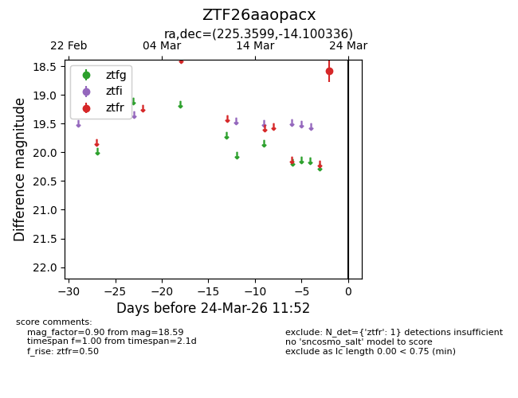
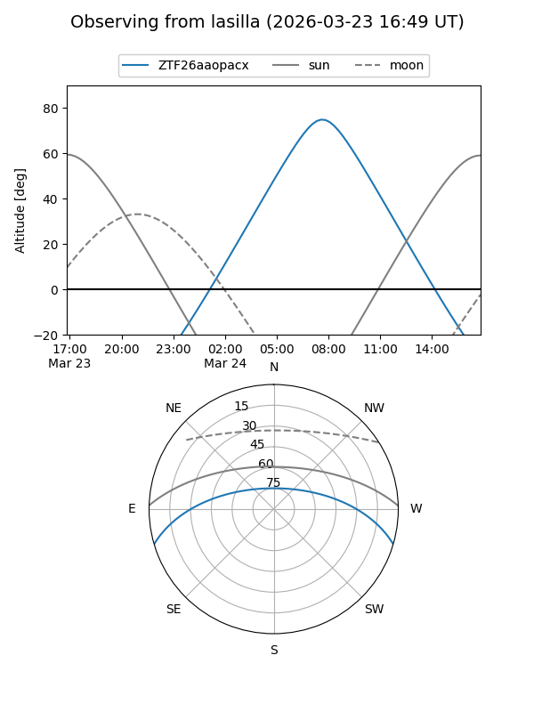
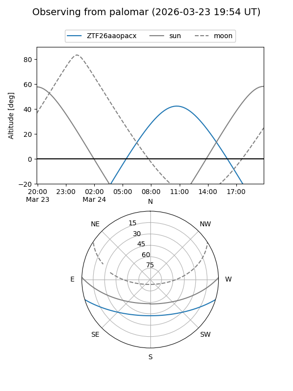

ZTF26aaopacx
Target ZTF26aaopacx at 2026-03-24 11:55
Aliases and brokers:
FINK: link
Lasair: link
ALeRCE: link
alt names
ZTF26aaopacx (ztf,fink_ztf)
Coordinates:
equatorial (ra, dec) = 225.3599,-14.10034
equatorial (HMS+DMS) = 15:01:26.37,-14:06:01.21
galactic (l, b) = (344.3939,+38.09029)
Flags:
Photometry:
last ztfr=18.59
1 ztfr detections
Lightcurve

Visibility


Additional plots